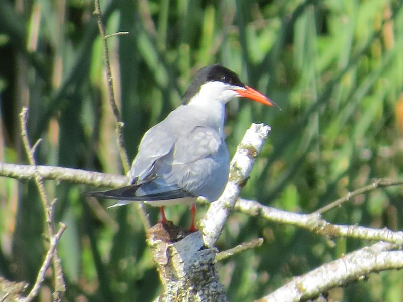

Fluss-Seeschwalbe
Sterna hirundo
Durch die Schaffung von Feuchtbiotopen mit Brutinseln konnte diese im Binnenland recht seltene Vogelart im Pfrunger Ried angesiedelt werden. Gegenwärtig brüten alljährlich mehrere Paare im Schutze einer Lachmöwenkolonie im Ried.